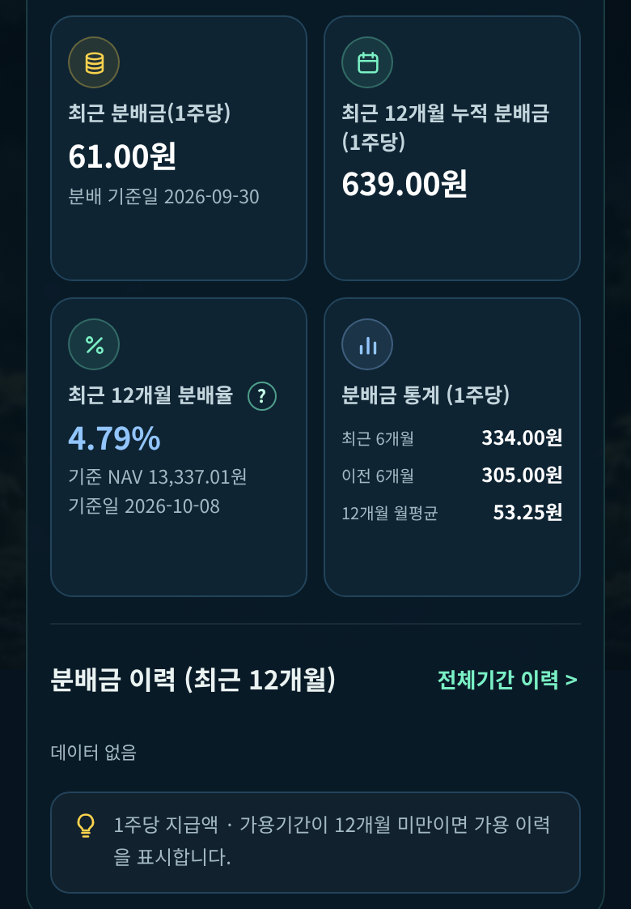
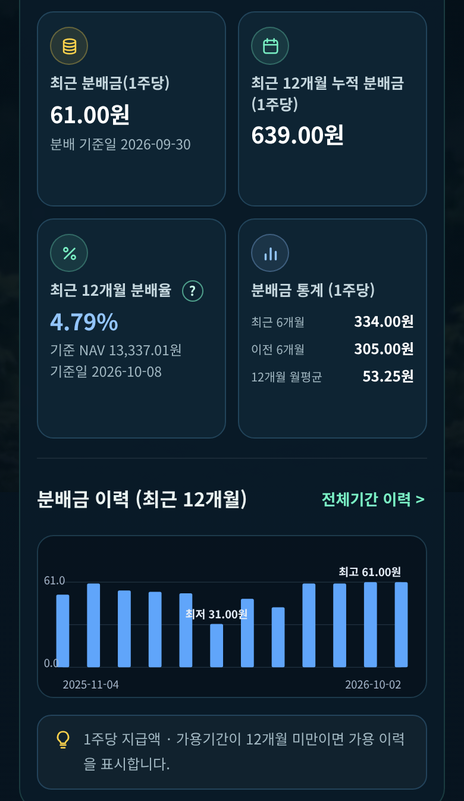
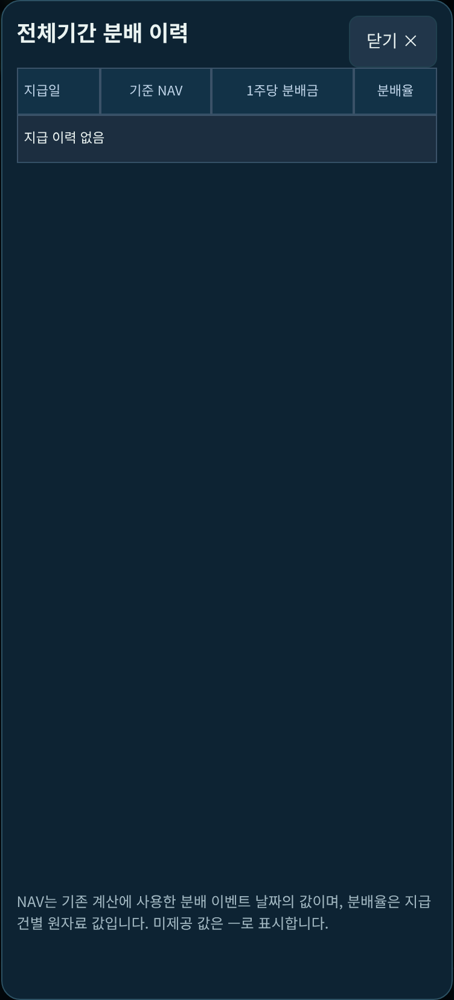
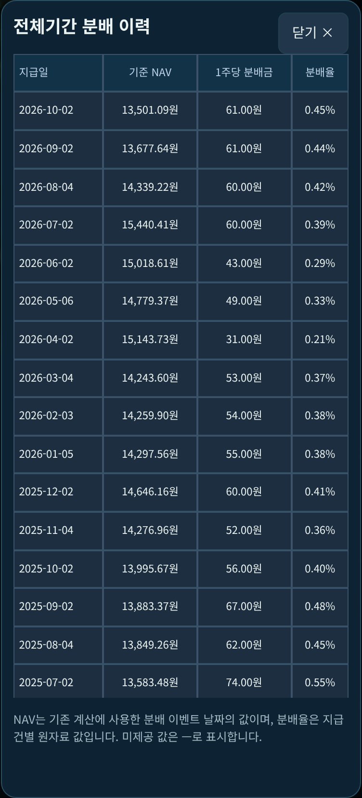

개발자 자체 QA(GrokBot)이며 외부 독립 QA 아님. 기준 bdb16e2 → 앱 커밋 c3f21ae · SW 캐시 donnaemsae-asset-hub-20261013-mobileui-v53d · 194-test 전용. v5.3 최종 승인 아님.
배포 data/0048J0.json의 Core 결과 periods.<기간>.distribution.history에는 16회차(지급일·1주당 분배금)가 있음. 요약(61원·639원)은 이 값을 읽음. 반면 전체기간 모달과 회차 막대는 presentations.<기간>.distribution_history / distribution_recent12를 읽는데, 0048J0 등 82종은 이 블록이 {reinvestment_effect_pp: null} 뿐이었음(표시용 산출 단계 누락). 194종 중 나머지 112종은 배포 presentation.py로 다시 계산하면 배포값과 완전히 일치하므로, 82종 JSON 생성 시 detail_presentation 단계가 빠진 것이 단절 지점. 코드 매핑·로딩·렌더 오류 아님. JSON 증거
82종 data/<code>.json의 presentations에 빠진 두 키(distribution_history, distribution_recent12)만 배포 presentation.py를 배포 periods·inputs/<code>.json에 적용해 추가. 기존 키·periods(Core 결과)·inputs·CORE 원천·세금 자료·JS 불변(비교 결과 presentations 외 변경 0). 회차·금액 생성 없음. SW 캐시 v53d. fix_presentations.py · fix.log
요약은 전후 동일(최근 61.00원 · 12개월 639.00원 · 6개월 334/305 · 월평균 53.25). 수정 후 회차 막대 12회 합 639원 = sum12, 전체 모달 16회 합 898원 = 전체기간 분배 합.
수정 전: 요약·회차 이력 · 전체기간 모달(지급 이력 없음)
수정 후: 요약·회차 이력 · 전체기간 모달(16회)




테스트 URL: https://archigon72.github.io/donnaemsae-194-test/detail.html?code=0048J0
대상: 배포 data/<code>.json 194종 × 고정기간 4 = 776건(배포 자료만). 판정 기준: (1) periods.distribution.history 회차 수 = presentations.distribution_history 회차 수, (2) 배포 presentations의 두 분배 키 = 배포 presentation.py 재계산값(완전 일치). 참고 (3) presentations 전체 일치.
| (1) 회차 수 불일치 | (2) 분배 키 불일치 | (3) 전체 불일치 | |
|---|---|---|---|
| 수정 전 | 81종/324건 | 82종/328건 | 82종 |
| 수정 후(로컬) | 0 | 0 | 82종(잔여: reinvestment_effect_pp·health_display·facts, 범위 밖) |
| 수정 후(실배포 재다운로드) | 0 | 0 | 82종 |
대상 82종: 0000D0 0013R0 0015E0 0015F0 0040X0 0040Y0 0046A0 0048J0 0049K0 0057H0 0073X0 0080X0 0085N0 0085P0 0086B0 0086C0 0089B0 0091C0 0132K0 0153P0 0174J0 0177N0 0183V0 0192S0 0194N0 0194R0 0203D0 0216K0 0220A0 0224X0 0233A0 0233J0 0238P0 136340 153130 181480 182480 214980 237370 251600 273140 284430 316300 329200 329650 329660 329670 332610 332620 341850 352540 352560 423160 429740 437070 437080 438330 440340 448330 453850 455030 458260 459580 464470 468370 468630 471460 472830 472870 473330 475080 476550 476750 476760 476800 480460 481060 481340 484790 490490 497880 499660
그중 Core 회차 0건이라 화면 변화 없는 종목: 0238P0
check_presentations.py · before_check.json · after_check.json · live_check.json
가상 계좌 '가상-0048J0사례계좌'[일반]: 2026-05-01 0048J0 500주 @13,500원, 재투자 0, 배당 사용 20,000원, 9/29 회차 가상 확정 실입금 21,551원(자동 세후 4회 99,449원 + 21,551 = 세후 121,000원). 수정 전(bdb16e2 로컬)·수정 후(로컬)·실배포 모두 아래 12항목 PASS, 관측값 전후 완전 동일: True.
| 보유수량: 직접매수 500주 / 재투자 0주 | PASS |
| 직접투자 원가 6,750,000원(500주×13,500원) | PASS |
| 세후 받은 배당 121,000원 | PASS |
| 재투자 배당 0원 | PASS |
| 세전 받은 배당 142,500원(43+60+60+61+61원×500주) | PASS |
| 사용/잔액 계좌 단위: 사용 가능 101,000원(121,000−20,000) | PASS |
| 사용/남은 배당 종목 화면은 계좌 공유 표기 | PASS |
| 계좌 유형 ISA 변경: 자동분 세금 0 재계산, 확정 실입금 21,551원 유지 → 133,551원 | PASS |
| 유형 변경 시 원장 거래·사용·확정 실입금 불변(유형만 변경) | PASS |
| 일반으로 되돌림: 121,000원 복귀, 원장 전체 = 시작 원장 | PASS |
| 새로고침 후 동일(121,000원, 500주/0주) | PASS |
| 콘솔 오류 0 | PASS |
수정 전 화면 · 수정 후 화면(실배포) · before · after · live · ledger_guard.py
| 스위트 | PASS/FAIL | 로그 |
|---|---|---|
| reg_local | 39/0 | reg_local.log |
| reg_live | 39/0 | reg_live.log |
| v53a_local | 29/0 | v53a_local.log |
| v53a_live | 29/0 | v53a_live.log |
| v53b_local | 25/0 | v53b_local.log |
| v53b_live | 25/0 | v53b_live.log |
| v5.3c 탭 정렬(실배포) | 4개 폭 텍스트 중심차 0, 버튼 채움 100%, 다른 탭 계산 스타일 동일, 콘솔 0 | json |
타 종목 화면 확인: 0004G0(정상 종목) 전후 동일, 0203D0 1→4회, 497880 1→22회. 전 · 후
NOT TESTED: v5.2·v5.2fix·v5.1·색상·원장 정밀검수 76건 스위트(이번 미재실행), 실기기, 직접지정 기간(런타임 계산 경로는 원래 presentation.py 사용).